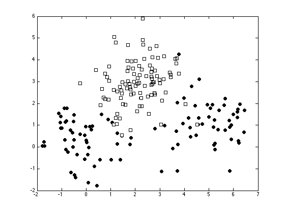

Contents
nonlinlogreg.m
From A First Course in Machine Learning, Chapter 5. Simon Rogers, 01/11/11 [simon.rogers@glasgow.ac.uk] Logistic regression with nonlinear functions
clear all;close all;
Generate some data
x = [randn(50,2) + repmat([5 1],50,1)]; x = [x; randn(50,2)]; x = [x; randn(100,2) + repmat([2 3],100,1)]; t = [repmat(0,100,1);repmat(1,100,1)];
Plot the data
ma = {'ko','ks'};
fc = {[0 0 0],[1 1 1]};
tv = unique(t);
figure(1); hold off
for i = 1:length(tv)
pos = find(t==tv(i));
plot(x(pos,1),x(pos,2),ma{i},'markerfacecolor',fc{i});
hold on
end
 Augment the data with nonlinear terms

X = [x(:,1).^0 x x.^2];
Use the Newton-Raphson MAP solution
%Initisliase the parameters w = repmat(0,size(X,2),1); % Start at zero tol = 1e-6; % Stopping tolerance Nits = 100; w_all = zeros(Nits,size(X,2)); % Store evolution of w values ss = 10; % Prior variance on the parameters of w change = inf; it = 0; while change>tol & it<=100 prob_t = 1./(1+exp(-X*w)); % Gradient grad = -(1/ss)*w' + sum(X.*(repmat(t,1,length(w))-repmat(prob_t,1,length(w))),1); % Hessian H = -X'*diag(prob_t.*(1-prob_t))*X; H = H - (1/ss)*eye(length(w)); % Update w w = w - inv(H)*grad'; it = it + 1; w_all(it,:) = w'; if it>1 change = sum((w_all(it,:) - w_all(it-1,:)).^2); end end w_all(it+1:end,:) = [];
Plot the parameter convergence
figure(1); hold off plot(w_all); xlabel('Iterations'); ylabel('Parameters');

Plot the decision contours
[Xv,Yv] = meshgrid(min(x(:,1)):0.1:max(x(:,1)),min(x(:,2)):0.1:max(x(:,2))); Pvals = 1./(1 + exp(-(w(1) + w(2).*Xv + w(3).*Yv + w(4).*Xv.^2 + w(5).*Yv.^2))); figure(1); hold off for i = 1:length(tv) pos = find(t==tv(i)); plot(x(pos,1),x(pos,2),ma{i},'markerfacecolor',fc{i}); hold on end [c,h] = contour(Xv,Yv,Pvals,[0.1 0.5 0.9],'k'); clabel(c,h)